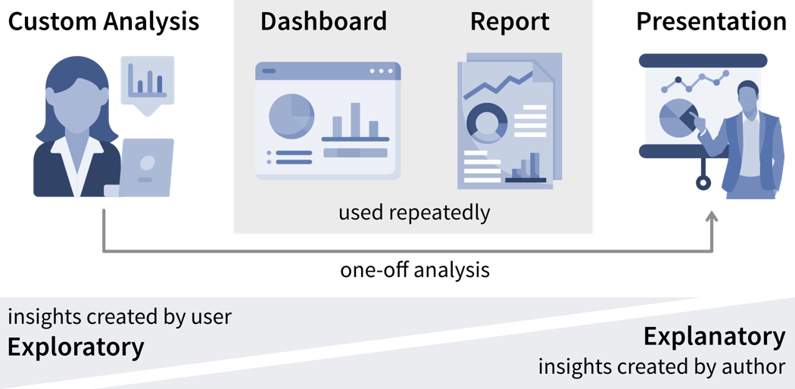
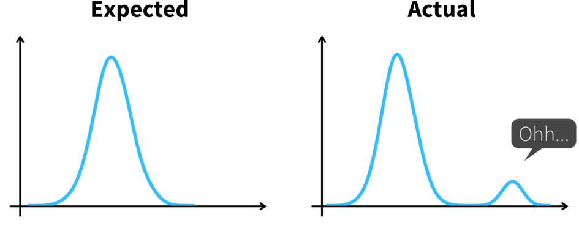
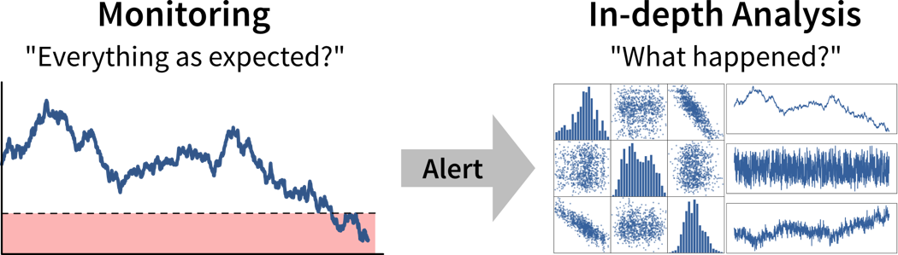
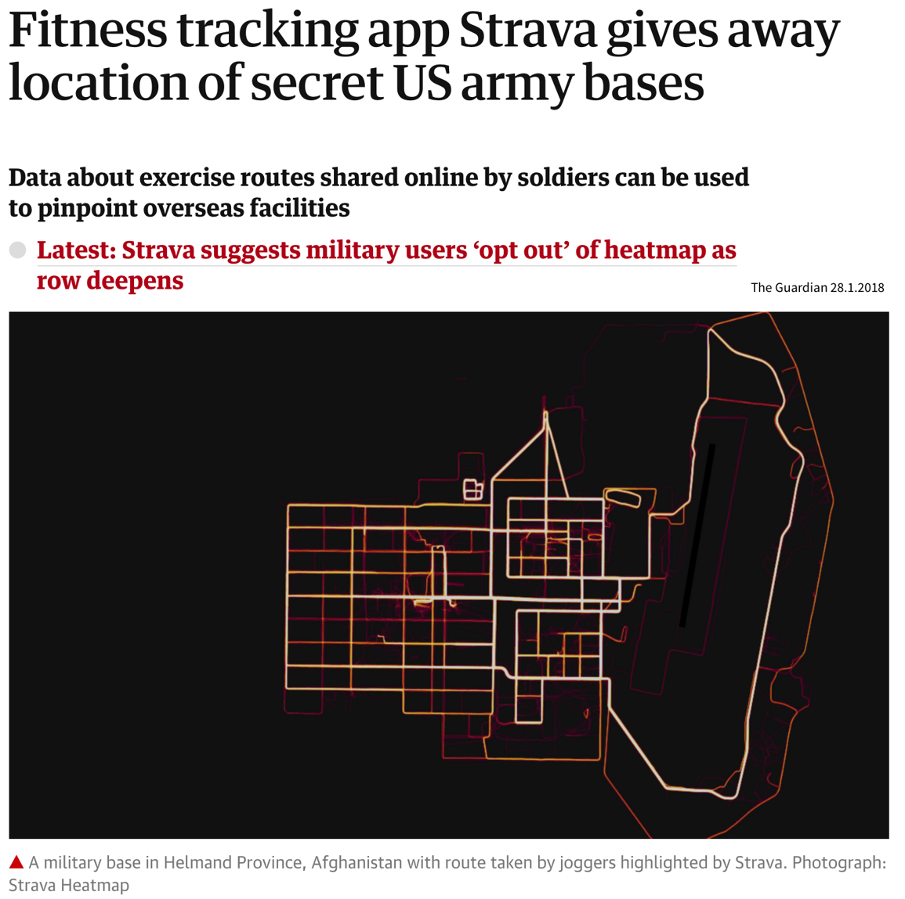

Datenanalyse & Preprocessing
Wie wir gesehen haben, lösen ML-Algorithmen Input-Output-Aufgaben. Und um ein ML-Problem zu lösen, müssen wir zunächst Daten sammeln, diese verstehen und dann so transformieren, dass ML-Algorithmen angewendet werden können (= Daten Vorverarbeitung / “Preprocessing”):

Datenanalyse
Das Analysieren von Daten ist nicht nur ein wichtiger Schritt, bevor diese Daten für ein Machine Learning Projekt verwendet werden, sondern kann auch wertvolle Erkenntnisse generieren, die zu besseren (datengestützten) Entscheidungen führen. Normalerweise analysieren wir Daten aus einem von zwei Gründen:
- Wir benötigen bestimmte Informationen, um eine (bessere) Entscheidung zu treffen (reaktive Analyse, zum Beispiel wenn etwas schief gelaufen ist und wir nicht wissen, warum).
- Wir sind neugierig auf die Daten und wissen noch nicht, was die Analyse bringen wird (proaktive Analyse, zum Beispiel um die Daten zu Beginn eines ML-Projekts besser zu verstehen).
Ergebnisse einer Datenanalyse können auf verschiedene Arten generiert und kommuniziert werden
- Eine maßgeschneiderte Analyse, deren Ergebnissen zum Beispiel in einer PowerPoint-Präsentation präsentiert werden
- Ein standardisierter Bericht, zum Beispiel in Form eines PDF-Dokuments, der statische Visualisierungen historischer Daten zeigt
- Ein Dashboard, also eine Webanwendung, die (fast) Echtzeitdaten zeigt, normalerweise mit interaktiven Elementen (z.B. Optionen zum Filtern der Daten)

Während die Datenstory in einer Präsentation in der Regel vorgegeben ist, haben Nutzer in einem interaktiven Dashboard mehr Möglichkeiten, die Daten zu interpretieren und selbst zu analysieren.
Was alle Arten der Datenanalyse gemein haben, ist, dass wir nach “(umsetzbaren) Erkenntnissen” suchen.
Was ist sind Erkenntnisse?
Der Psychologe Gary Klein definiert eine Erkenntnis als “eine unerwartete Veränderung in der Art, wie wir Dinge verstehen”.

Zu einer Erkenntnis kommen wir somit in zwei Schritten:
- Etwas Unerwartetes entdecken, zum Beispiel einen plötzlichen Rückgang oder Anstieg in einer Metrik.
- Verstehen, warum dies passiert ist, also tiefer in die Daten eintauchen, um die Ursache (Root Cause) zu identifizieren.
Wenn wir verstehen, warum etwas passiert ist, können wir oft auch eine potenzielle Maßnahme identifizieren, die uns wieder auf Kurs bringen könnte, wodurch dies zu einer umsetzbaren Erkenntnis (actionable insight) wird.
Domänenwissen ist oft hilfreich, um zu wissen, welche Werte unerwartet sind und wo es sich lohnen könnte, tiefer in die Daten einzusteigen. Daher kann es sinnvoll sein, die Ergebnisse zusammen mit einem Fachexperten durchzugehen.
Im besten Fall werden wichtige Kennzahlen kontinuierlich in Dashboards oder Berichten überwacht, um Abweichungen von der Norm so schnell wie möglich zu erkennen, während die Identifizierung der Ursache oft eine maßgeschneiderte Analyse erfordert.

Als Datenanalyst wird man manchmal mit spezifischeren Fragen konfrontiert, wie zum Beispiel “Wir überlegen, wo wir eine neue Marketingkampagne starten sollen. Kannst du mir die Anzahl der Nutzer für alle europäischen Länder zeigen?”. In solchen Fällen kann es hilfreich sein, nach dem Warum zu fragen, um zu verstehen, wo die Person etwas Unerwartetes bemerkt hat, das diese Analyseanfrage ausgelöst hat. Wenn die Antwort lautet “Oh, wir haben noch etwas Marketingbudget übrig und müssen das Geld irgendwo ausgeben”, dann gib ihnen einfach die Ergebnisse. Wenn die Antwort jedoch lautet “Unser Umsatz für dieses Quartal war niedriger als erwartet”, könnte es sich lohnen, andere mögliche Ursachen zu untersuchen, denn vielleicht liegt das Problem nicht in der Anzahl der Nutzer, die die Website besuchen, sondern darin, dass viele Nutzer vor Erreichen der Checkout-Seite aussteigen. Das Geld könnte möglicherweise besser in eine Usability-Studie investiert werden, um zu verstehen, warum Nutzer den Verkaufsprozess nicht abschließen.
Datengestützte Entscheidungen
So spannend es auch sein kann, etwas über die Daten und ihren Kontext zu lernen – wir generieren damit noch keinen Wert. Erkenntnisse werden erst wertvoll, wenn sie eine Entscheidung beeinflussen und dazu führen, dass jemand anders handelt, als er oder sie es ohne die Analyse getan hätte.

Dazu müssen wir zunächst klarstellen, welche Entscheidung unsere Erkenntnisse beeinflussen sollen.
Nicht alle Entscheidungen müssen datengestützt getroffen werden. Entscheidungsträger sollten aber ehrlich sein, ob eine Entscheidung von den Ergebnissen der Analyse beeinflusst werden kann und welche Daten sie dazu bringen würden, ihre Meinung zu ändern und einen anderen Handlungsweg zu wählen. Wenn Daten nur angefordert werden, um eine Entscheidung zu untermauern, die in Wirklichkeit bereits getroffen wurde, erspare den Analysten den Aufwand!
Bevor wir mit einer Datenanalyse beginnen müssen wir uns im Klaren darüber sein:
- Wer sind die relevanten Stakeholder, also wer wird die Ergebnisse unserer Analyse sehen (= die Zielgruppe / Dashboardnutzer)?
- Was ist ihr Ziel?
Im geschäftlichen Kontext hängen die Ziele der Nutzer in der Regel irgendwie mit der Gewinnerzielung für das Unternehmen zusammen, zum Beispiel durch Umsatzsteigerung (z.B. durch effektivere Lösung von Kundenproblemen im Vergleich zur Konkurrenz) oder Kostenreduzierung.
Um das Erreichen dieser Ziele zu tracken verwenden wir sogenannte Key Performance Indicators (KPIs), d.h. benutzerdefinierte Metriken, die uns anzeigen, wie gut die Dinge laufen. Wenn wir beispielsweise an einer Webanwendung arbeiten, könnte ein interessanter KPI die “Nutzerzufriedenheit” sein. Leider kann man die tatsächliche Nutzerzufriedenheit nur schwer messen, aber wir können stattdessen die Anzahl der wiederkehrenden Nutzer und wie lange sie auf unserer Seite bleiben tracken, und diese und andere Messungen dann geschickt zu einer Proxy-Variablen kombinieren, die wir dann “Nutzerzufriedenheit” nennen.
Ein KPI ist nur dann eine zuverlässige Metrik, wenn er nicht gleichzeitig dazu verwendet wird, das Verhalten von Personen zu steuern, da diese sonst versuchen, das System auszutricksen (Goodharts Gesetz). Wenn unser Ziel beispielsweise eine qualitativ hochwertige Software ist, ist die Anzahl von Bugs in unserer Software kein zuverlässiges Qualitätsmaß, wenn wir gleichzeitig Programmierer für jeden gefundenen und behobenen Bug belohnen.
Lagging vs. Leading KPIs
Leider können die Dinge, die uns wirklich interessieren, oft nur nachträglich gemessen werden, also wenn es schon zu spät ist, um korrigierend einzugreifen. Zum Beispiel interessieren uns im Vertrieb die “realisierten Umsätze”, also das auf der Bank eingegangene Geld. Aber wenn die Einnahmen am Ende des Quartals geringer sind als erhofft, können wir nur versuchen, im nächsten Quartal besser zu sein. Diese Kennzahlen nennt man lagging (nachlaufende) KPIs.
Leading (führende) KPIs hingegen sagen uns, wann wir handeln sollten, bevor es zu spät ist. Im Vertrieb könnte das zum Beispiel das Volumen der Deals in der Vertriebspipeline sein. Auch wenn nicht alle diese Deals letztendlich zu realisierten Umsätzen führen, wissen wir sicher, dass wir unsere Umsatzziele nicht erreichen werden, wenn die Pipeline leer ist.
Wenn die Ursache-Wirkung-Beziehungen zwischen Variablen zu komplex sind, um direkt leading KPIs zu identifizieren, können wir stattdessen versuchen, lagging KPIs mit einem Machine Learning Modell vorherzusagen. Zum Beispiel könnte in einem Produktionsprozess für Kunststoff ein wichtiges Qualitätsmaß die Zugfestigkeit sein, die 24 Stunden nach dem Aushärten gemessen wird. Falls wir nach 24 Stunden feststellen, dass die Qualität nicht ausreichend ist, kann es sein, dass wir die komplette Produktion verwerfen müssen. Wenn die Beziehungen zwischen den Prozessparametern (wie Produktionstemperatur) und der resultierenden Qualität zu komplex sind, um ein leading KPI zu identifizieren, könnten wir stattdessen ein ML-Modell mit vergangenen Prozessparametern (Inputs) und dazugehörigen Qualitätsmessungen (Outputs) trainieren, um dann kontinuierlich die Qualität während der Produktion vorherzusagen. Wenn das Modell vorhersagt, dass die Qualität nicht im Zielbereich liegt, können die Bediener sofort eingreifen und das Problem beheben, bevor weitere Produktionszeit verschwendet wird.
Damit wir uns auf die Vorhersagen verlassen können, müssen wir nun allerdings zusätzlich die Performance des Modells überwachen. Die Vorhersagegenauigkeit auf neuen Daten dient hier als lagging KPI, da wir erst 24h später, also nachdem die echten Messungen eingetroffen sind, wissen, ob die Vorhersagen korrekt waren. Als leading KPI können wir die Diskrepanz zwischen den für das Modelltraining verwendeten Prozessparameterwerten und den in der Produktion gemessenen Werten berechnen, um Datendrifts zu identifizieren. Solche Drifts, wie z.B. Änderungen in den Werten aufgrund von Sensorstörungen, können zu falschen Vorhersagen für betroffenen Proben führen.
Der erste Schritt bei einer datengestützen Entscheidung ist zu erkennen, dass wir handeln sollten, indem wir unsere KPIs überwachen, um festzustellen, ob wir dabei sind, unsere Ziele zu verfehlen.
Idealerweise werden diese Metriken mit Schwellwerten für Warnungen kombiniert, um uns automatisch zu benachrichtigen, wenn etwas schief geht und eine Korrekturmaßnahme erforderlich ist. Beispielsweise könnten wir eine Warnung zum Zustand eines Systems oder einer Maschine einrichten, um einen Techniker zu benachrichtigen, wenn eine Wartung erforderlich ist. Um Alarmmüdigkeit zu vermeiden, ist es wichtig, falsche Alarme zu reduzieren, also die Warnung so zu konfigurieren, dass die verantwortliche Person sagt: “Wenn dieser Schwellwert erreicht ist, lasse ich alles stehen und liegen und behebe das Problem” (nicht “an diesem Punkt sollten wir es wahrscheinlich im Auge behalten”).
Je nachdem, wie häufig sich der Wert des KPI ändert und wie schnell Korrekturmaßnahmen Wirkung zeigen, möchten wir die Alarmbedingung entweder alle paar Minuten überprüfen, um jemanden in Echtzeit zu benachrichtigen, oder zum Beispiel jeden Morgen, jeden Montag oder einmal im Monat, wenn sich die Werte langsamer ändern.
Ist das signifikant?
Kleine Schwankungen in den KPIs sind normal, und wir sollten nicht überreagieren, wenn es sich um zufälliges Rauschen handelt. Statistik kann uns sagen, ob die beobachtete Abweichung von dem, was wir erwartet haben, signifikant ist.
Statistische Inferenz ermöglicht es uns Schlussfolgerungen zu ziehen, die über die vorliegenden Daten hinausgehen. Oft möchten wir eine Aussage über eine ganze Population treffen (z.B. alle Menschen, die derzeit auf dieser Erde leben), aber wir haben nur Zugriff auf einige (hoffentlich repräsentative) Beobachtungen, aus denen wir unsere Schlussfolgerung ziehen können. Bei der statistischen Inferenz geht es darum, unsere Meinung trotz dieser Unsicherheit zu ändern: Wir nehmen eine Nullhypothese (= unsere Erwartung bevor wir in die Daten geschaut haben) an und prüfen dann, ob das, was wir in unserer Stichprobe beobachten, diese Nullhypothese lächerlich erscheinen lässt. Ist dies der Fall, verwerfen wir sie und nehmen stattdessen die alternative Hypothese an.
Beispiel: Euer Unternehmen hat einen Online-Shop und möchte ein neues Empfehlungssystem einführen, aber ihr seid euch nicht sicher, ob Kunden diese Empfehlungen hilfreich finden und mehr kaufen werden. Bevor ihr mit dem neuen System live geht, führt ihr daher einen A/B-Test durch, bei dem ein Prozentsatz zufällig ausgewählter Nutzer die neuen Empfehlungen sieht, während die anderen zur ursprünglichen Version des Online-Shops weitergeleitet werden. Die Nullhypothese lautet, dass die neue Version nicht besser ist als das Original. Aber es stellt sich heraus, dass das durchschnittliche Verkaufsvolumen der Kunden, die die neuen Empfehlungen sehen, viel höher ist als das der Kunden, die die ursprüngliche Website besuchen. Dieser Unterschied ist so groß, dass es in einer Welt, in der die Nullhypothese wahr wäre, äußerst unwahrscheinlich wäre, dass eine zufällige Stichprobe uns diese Ergebnisse liefern würde. Wir verwerfen daher die Nullhypothese und gehen von der Alternativhypothese aus, dass die neuen Empfehlungen höhere Umsätze generieren.
Neben strengen statistischen Tests gibt es auch einige Faustregeln, um zu bestimmen, ob Veränderungen in den Daten unsere Aufmerksamkeit erfordern: Wenn eine einzelne Stichprobe drei Standardabweichungen (\(\sigma\)) über oder unter dem Mittelwert liegt oder sieben aufeinanderfolgende Punkte über oder unter dem Durchschnittswert liegen, ist dies ein Grund für weitere Untersuchungen.

Lies diesen Artikel wenn du mehr über den Unterschied zwischen Analysten und Statistikern erfahren möchtest und warum diese immer mit unterschiedlichen Teilen eines Datensatzes arbeiten sollten.
Für jede eingerichtete Alarmbedingung, also immer wenn klar ist, dass eine Korrekturmaßnahme erforderlich ist, sollten wir uns überlegen, ob diese Maßnahme automatisiert werden kann und die automatisierte Aktion direkt zusammen mit dem Alarm auslösen (zum Beispiel wenn die Genauigkeit eines ML-Modells unter einen bestimmten Schwellwert fällt, könnten wir das Modell automatisch mit den neusten Daten nachtrainieren anstatt nur den Data Scientist zu benachrichtigen). Wenn dies nicht möglich ist, zum Beispiel, weil nicht klar ist, was genau passiert ist und welche Maßnahme ergriffen werden sollte, benötigen wir eine tiefere Analyse.
Ein tieferes Eintauchen in die Daten kann uns helfen, Fragen wie “Warum haben wir dieses Ziel nicht erreicht und was können wir besser machen?” (oder, in selteneren Fällen, “Warum haben wir dieses Ziel übertroffen und wie können wir das wiederholen?”) zu beantworten, um zu entscheiden welche Korrekturmaßnahme ergriffen werden soll.
Durchsuche die Daten nicht nur nach Erkenntnissen, die das bestätigen, was du dir schon vorher gedacht hast (Bestätigungsfehler / Confirmation Bias)! Sei stattdessen offen und versuche aktiv, deine Hypothese zu widerlegen.
Solch eine explorative Analyse ist oft ein ‘quick and dirty’ Prozess, bei dem wir viele Diagramme erstellen, um die Daten besser zu verstehen und um zu erkennen, woher der Unterschied zwischen dem, was wir erwartet haben, und dem, was wir in den Daten sehen, kommt, z.B. indem wir andere korrelierte Variablen untersuchen. Zufriedenstellende Antworten zu finden ist allerdings oft mehr Kunst als Wissenschaft.
Wenn wir ein ML-Modell verwenden, um KPIs vorherzusagen, können wir dieses Modell und seine Vorhersagen interpretieren, um besser zu verstehen, welche Variablen die KPIs beeinflussen könnten. In dem wir zuerst die vom ML-Modell als wichtig erachteten Features untersuchen, können wir Zeit sparen, wenn unser Datensatz Hunderte von Variablen enthält. Aber Achtung – das Modell hat nur aus Korrelationen in den Daten gelernt; diese repräsentieren nicht unbedingt wahre kausale Zusammenhänge zwischen den Variablen.
Erkenntnisse kommunizieren
Die Diagramme, die wir während der explorativen Analyse erstellt haben, sollten nicht die Diagramme sein, die wir unserem Publikum zeigen, um unsere Erkenntnisse zu kommunizieren. Da unsere Zielgruppe mit den Daten viel weniger vertraut ist als wir und wahrscheinlich auch kein Interesse / keine Zeit hat, tiefer in die Daten einzutauchen, müssen wir ihnen die Ergebnisse leichter zugänglich machen – ein Prozess, der oft als erklärende Analyse bezeichnet wird.
“Einfach alle Daten zeigen” und hoffen, dass das Publikum schon irgendwas daraus machen wird, ist oft der Anfang vom Ende vieler Dashboards. Es ist wichtig, dass du verstehst, welches Ziel dein Publikum erreichen möchte und welche Fragen dafür beantwortet werden müssen.
Schritt 1: Wähle den richtigen Diagrammtyp
- Lass dich von Visualisierungsbibliotheken inspirieren (z.B. hier oder hier), aber vermeide den Drang, ausgefallene Grafiken zu erstellen; gängigen Visualisierungen machen es dem Publikum einfacher, die Informationen korrekt zu entschlüsseln
- Verwende keine 3D-Effekte!
- Vermeide Torten- oder Donutdiagramme (Winkel sind schwer zu interpretieren)
- Verwende Liniendiagramme für Zeitreihendaten
- Verwende horizontale statt vertikaler Balkendiagramme für Zielgruppen, die von links nach rechts lesen
- Bei Flächen- und Balkendiagrammen sollte die y-Achse bei 0 beginnen
- Benutze evtl. ‘Small Multiples’ oder Sparklines, wenn ein einzelnes Diagramm zu vollgestopft wirkt

Schritt 2: Unnötiges weglassen / Daten-zu-Tinte-Verhältnis maximieren
- Rand entfernen
- Gitterlinien entfernen
- Datenmarker entfernen
- Achsenbeschriftungen aufs Wesentliche reduzieren
- Linien direkt beschriften

Schritt 3: Aufmerksamkeit fokussieren
- Beginne mit grau, also schiebe erstmal alles in den Hintergrund
- Verwende präattentive Attribute wie Farben strategisch um das wichtigste hervorzuheben
- Verwende Datenmarker und Labels sparsam

Schritt 4: Daten zugänglich machen
- Kontext hinzufügen: Welche Werte sind gut (Zielzustand), welche schlecht (Alarmschwelle)? Sollten die Daten mit einer anderen Variable vergleichen werden (z.B. gemessene Werte und Vorhersagen)?
- Verwende konsistente Farben, wenn Informationen über mehrere Diagramme verteilt sind (z.B. Daten von einem Land immer in derselben Farbe darstellen)
- Füge erklärenden Text hinzu, um die wichtigsten Schlussfolgerungen und Handlungsempfehlungen herauszustellen (falls dies nicht möglich ist, z.B. in Dashboards, in denen sich die Daten ständig ändern, kann der Titel stattdessen die Frage enthalten, die das Diagramm beantworten soll, z.B. “Folgt unser Umsatz den Prognosen?”)

Weiterführende Literatur
- Show Me the Numbers: Designing Tables and Graphs to Enlighten von Stephen Few
- Better Data Visualizations: A Guide for Scholars, Researchers, and Wonks von Jonathan Schwabish
- Effective Data Storytelling: How to drive change with data, narrative, and visuals von Brent Dykes
- Storytelling with Data: A data visualization guide for business professionals von Cole Nussbaum Knaflic
- Data Visualization: A successful design process von Andy Kirk
- Verschiedene Blogartikel von Cassie Kozyrkov
Garbage in, Garbage out!
Vergiss nie: Daten sind unser Rohstoff, um mit ML etwas Wertvolles zu schaffen. Ist die Qualität oder Quantität der Daten nicht ausreichend, haben wir ein “Garbage in, Garbage out”-Szenario und egal welche Art von ausgefallenem ML-Algorithmus wir verwenden, wir werden kein zufriedenstellendes Ergebnis erreichen. Im Gegenteil, je aufwändiger die Algorithmen (z.B. Deep Learning), desto mehr Daten werden benötigt.
Nachfolgend findest du eine Zusammenfassung einiger allgemeiner Risiken im Zusammenhang mit Daten, die die Anwendung von ML erschweren oder sogar unmöglich machen:
Rohdaten können sehr chaotisch sein:
- Relevante Daten sind auf mehrere Datenbanken/Excel-Tabellen verteilt, die zusammengeführt werden müssen. Worst Case: Datenpunkte haben keine eindeutige ID, anhand derer sich die verschiedenen Einträge verknüpfen lassen. Stattdessen muss man auf eine fehleranfällige Strategie zurückgreifen, wie den Datenabgleich anhand von Zeitstempeln.
- Manuell eingegebene Werte enthalten Fehler, z.B. falsch platzierte Dezimalkommas.
- Fehlende Werte können nicht korrigiert werden. Worst Case: Fehlende Werte sind nicht zufällig. Beispielsweise versagen Sensoren genau dann, wenn während des Produktionsprozesses etwas schief geht. Oder im Rahmen einer Umfrage zum Einkommen verweigern reiche Personen im Vergleich zu armen oder mittelständischen Personen häufiger die Antwort. Dies kann zu systematischen Verzerrungen im Datensatz führen.
- Der Datensatz besteht aus verschiedenen Datentypen (strukturiert und/oder unstrukturiert) mit unterschiedlichen Skalierungen.
- Der Prozess ändert sich im Laufe der Zeit, z.B. aufgrund externer Bedingungen wie dem Austausch eines Sensors oder einem anderen Wartungsereignis, was bedeutet, dass die über verschiedene Zeiträume gesammelten Daten nicht kompatibel sind. Worst Case: Diese externen Veränderungen wurden nirgends dokumentiert und wir bemerken erst am Ende der Analyse, dass die verwendeten Daten unsere Annahmen verletzten.
→ Preprocessing von Daten dauert sehr lange.
→ Der resultierende Datensatz (nach der Bereinigung) ist viel kleiner als erwartet – möglicherweise zu klein, um eine sinnvolle Analyse durchzuführen.
⇒ Bevor du mit ML anfängst, überlege erst, ob du die Datenerfassungspipeline und Infrastruktur verbessern kannst!
Nicht genug / nicht die richtigen Daten für ML:
Ein kleiner Datensatz und/oder zu wenig Variation, z.B. werden nur sehr wenige defekte Produkte produziert oder ein Prozess läuft die meiste Zeit im stationären Zustand, d.h. es gibt nur wenig oder keine Variation bei den Inputs.
→ Auswirkung verschiedener Eingangsgrößen auf die Zielvariable kann aus wenigen Beobachtungen nicht zuverlässig abgeschätzt werden.
⇒ Führe gezielt Experimente durch, bei denen verschiedene Inputs systematisch variiert werden, um einen aussagekräftigeren Datensatz zu generieren.Daten sind inkonsistent / unvollständig, also es gibt Datenpunkte mit gleichen Inputs aber unterschiedlichen Labels, z.B. zwei Produkte wurden unter den gleichen (gemessenen) Bedingungen produziert, eins ist in Ordnung, eins fehlerhaft.
Dies kann zwei Gründe haben:- Die Labels sind sehr verrauscht, z.B. weil die menschlichen Annotatoren nicht dieselben klaren Regeln befolgten oder einige Beispiele mehrdeutig waren (z.B. ein QA-Experte sagt ein kleiner Kratzer ist noch in Ordnung, der andere sortiert das Produkt aus).
⇒ Etablierung klarer Regeln nach welchen Kriterien Daten gelabelt werden sollen und Daten durch Neuannotation bereinigen. Dies kann einige Zeit dauern, lohnt sich aber! Siehe auch dieser tolle MLOps / data-centric AI Vortrag von Andrew Ng darüber, wie ein kleiner sauberer Datensatz wertvoller sein kann als ein großer verrauschter Datensatz. - Relevante Input Features fehlen: Menschen können zwar relativ einfach beurteilen, ob alle relevanten Informationen in unstrukturierten Daten enthalten sind (z.B. Bilder: entweder sehen wir eine Katze oder nicht), strukturierte Daten haben dagegen oft zu viele verschiedene Variablen und komplexe Interaktionen, um sofort zu erkennen, ob alle relevanten Eingangsgrößen gemessen wurden.
⇒ Sprich mit einem Fachexperten darüber, welche zusätzlichen Features hilfreich sein könnten und nimm diese in den Datensatz mit auf. Worst Case: Es muss ein neuer Sensor in die Maschine eingebaut werden um diese Daten zu sammeln, d.h. alle in der Vergangenheit gesammelten Daten sind im Grunde nutzlos. ABER: Der Einsatz des richtigen Sensors kann das Problem immens vereinfachen und der Einbau lohnt sich!
- Die Labels sind sehr verrauscht, z.B. weil die menschlichen Annotatoren nicht dieselben klaren Regeln befolgten oder einige Beispiele mehrdeutig waren (z.B. ein QA-Experte sagt ein kleiner Kratzer ist noch in Ordnung, der andere sortiert das Produkt aus).
Bei vielen Anwendungen ist unser erster Gedanke oft, die Eingabedaten mithilfe einer Kamera zu generieren, da wir Menschen hauptsächlich auf unser visuelles System angewiesen sind, um viele Aufgaben zu lösen. Auch wenn Bilderkennungsalgorithmen mittlerweile sehr ausgereift sind, kann die Verwendung eines solchen Setups anstelle eines spezialisierteren Sensors die Lösung komplizierter machen.
Willst du überreife Erdbeeren erkennen? Machs wie Amazon Fresh und verwende einen Nahinfrarotsensor (NIR) anstelle einer normalen Kamera. Dabei wird immer noch maschinelles Lernen verwendet um die resultierenden Daten zu analysieren, aber in den NIR-Bildern sind die vergammelten Teile der Früchte viel besser sichtbar als auf normalen Fotos.
Versuchst du zu erkennen, ob eine Tür geschlossen ist? Mit einem einfachen Magneten und Detektor lässt sich diese Aufgabe ohne aufwändige Analyse oder Trainingsdaten lösen! (Du kennst bestimmt das Sprichwort: “Wenn du einen Hammer hast, sieht alles aus wie ein Nagel”. → Vergiss nicht, auch Lösungen außerhalb deiner ML-Toolbox in Betracht zu ziehen! ;-))
→ Wenn der Datensatz nicht entsprechend aufgewertet wird, wird kein ML-Modell eine gute Performance liefern!
Beobachte wenn möglich wie die Daten erfasst werden, im Sinne von: Stehe tatsächlich physisch da und beobachte, wie jemand die Werte in ein Programm eingibt oder wie die Maschine arbeitet, wenn die Sensoren etwas messen. Sicherlich werden dir einige Dinge auffallen, die man direkt bei der Datenerhebung optimieren könnte. Dies erspart in Zukunft viel Preprocessing Arbeit.
Best Practice: Datenkatalog
Um Datensätze leichter zugänglich zu machen, sollten diese dokumentiert werden. Für strukturierte Datensätze sollte es für jede Variable Zusatzinformationen geben wie:
- Name der Variable
- Beschreibung
- Einheit
- Datentyp (z.B. numerische oder kategorische Werte)
- Datum der ersten Messung (z.B. falls ein Sensor erst später eingebaut wurde)
- Normaler/erwarteter Wertebereich (→ “Wenn die Variable unter diesem Schwellwert liegt, dann ist die Maschine ausgeschaltet und die Datenpunkte können ignoriert werden”)
- Wie werden fehlende Werte aufgezeichnet, d.h. werden sie tatsächlich als fehlende Werte aufgezeichnet oder stattdessen durch einen unrealistischen Wert ersetzt, was passieren kann, da einige Sensoren kein Signal für “Not a Number” (NaN) senden können oder die Datenbank es nicht zulässt, dass das Feld leer bleibt.
- Anmerkungen zu sonstigen Vorfällen oder Ereignissen, z.B. eine Fehlfunktion des Sensors während eines bestimmten Zeitraums oder ein anderer Fehler, der zu falschen Daten geführt hat. Diese sind sonst oft schwer zu erkennen, z.B. wenn jemand stattdessen manuell Werte eingibt oder kopiert hat, die auf den ersten Blick normal aussehen.
Weitere Empfehlungen, was bei der Dokumentation von Datensätzen speziell für Machine Learning Anwendungen wichtig ist, findest du im Data Cards Playbook.
Neben der Dokumentation von Datensätzen als Ganzes ist es auch sehr hilfreich, Metadaten für einzelne Proben zu speichern. Bei Bilddaten können dies beispielsweise der Zeitstempel der Bildaufnahme, die Geolokalisierung (oder wenn die Kamera in einer Fertigungsmaschine verbaut ist, dann die ID dieser Maschine), Informationen zu den Kameraeinstellungen etc. sein. Dies kann bei der Analyse von Modellvorhersagefehlern sehr hilfreich sein, da sich beispielsweise herausstellen kann, dass Bilder, die mit einer bestimmten Kameraeinstellung aufgenommen wurden, besonders schwer zu klassifizieren sind, was uns wiederum Hinweise liefert, wie wir den Datenerfassungsprozesses verbessern könnten.
Daten als Asset
Mit den richtigen Prozessen (z.B. Etablierung von Rollen wie “Data Owner” und “Data Controller”, die für die Datenqualität verantwortlich sind, und Aufbau einer konsistenten Dateninfrastruktur, inkl. eines Monitoring-Prozesses zur Validierung neuer Daten) ist es für eine Organisation möglich, von “Garbage in, Garbage out” zu “Daten sind das neue Öl” zu kommen:

Mit (Big) Data kommt große Verantwortung!
Einige Daten erscheinen auf den ersten Blick manchmal nicht sehr wertvoll, können aber für andere (d.h. mit einem anderen Anwendungsfall) von großem Nutzen sein!

Preprocessing
Jetzt, da wir unsere Daten besser verstehen und sicher gestellt haben, dass sie (hoffentlich) von guter Qualität sind, können wir sie für unsere Machine Learning Algorithmen aufbereiten.
Rohdaten können in vielen verschiedenen Formaten vorliegen, z.B. Sensormessungen, Pixelwerte, Text (z.B. HTML-Seite), SAP-Datenbank, …
→ n Datenpunkte, gespeichert als Zeilen in einem Excel-Spreadsheet, als einzelne Dateien, usw.
Was ist ein Datenpunkt? Es ist äußerst wichtig sich darüber im Klaren zu sein, was eigentlich ein Datenpunkt ist, d.h. wie die Inputs aussehen und welches Ergebnis das Modell für jede Probe/Beobachtung zurückgegeben soll. Um das zu bestimmen, hilft es sich zu überlegen, wie das ML-Modell später in den Rest des Workflows integriert werden soll: Welche Daten werden im vorherigen Schritt erzeugt und können als Input für den ML-Teil verwendet werden, und was für einen Output braucht man für den darauffolgenden Schritt?
Preprocessing
Transformation und Anreicherung der Rohdaten vor der Anwendung von ML, zum Beispiel:
- Fehlende oder falsch eingetragene Werte entfernen / korrigieren (z.B. falsch gesetztes Dezimalkomma)
- Null-Varianz-Features (d.h. Variablen mit immer gleichem Wert) und unsinnige Variablen (z.B. IDs) ausschließen
- Feature Extraktion: Rohdaten in numerische Werte umwandeln (z.B. Text)
- Feature Engineering: Berechnen zusätzlicher/besserer Features aus den ursprünglichen Variablen
⇒ Feature Matrix \(\,X \in \mathbb{R}^{n\times d}\): n Datenpunkte; jeder repräsentiert als ein d-dimensionaler Vektor (d.h. mit d Features)
Vorhersage-Targets?
→ Label Vektor \(\,\mathbf{y}\): n-dimensionaler Vektor mit einem Target Wert (Label) pro Datenpunkt